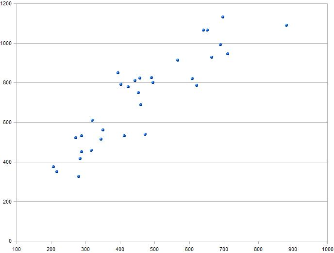
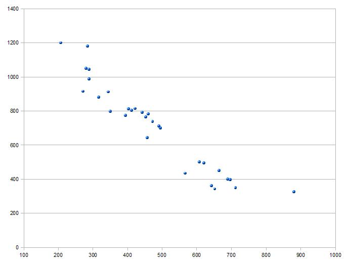
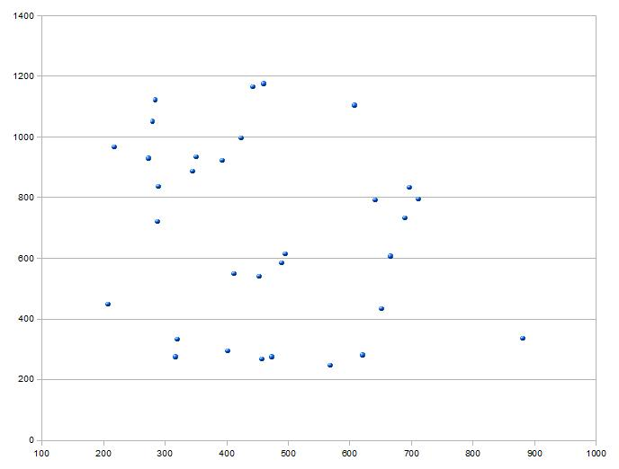
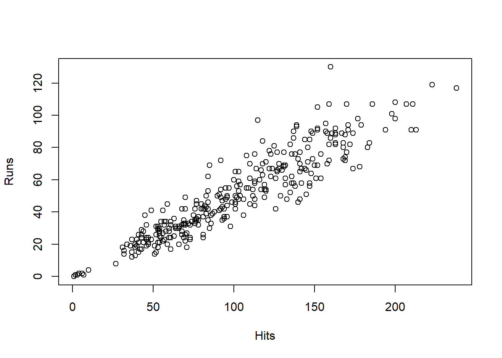
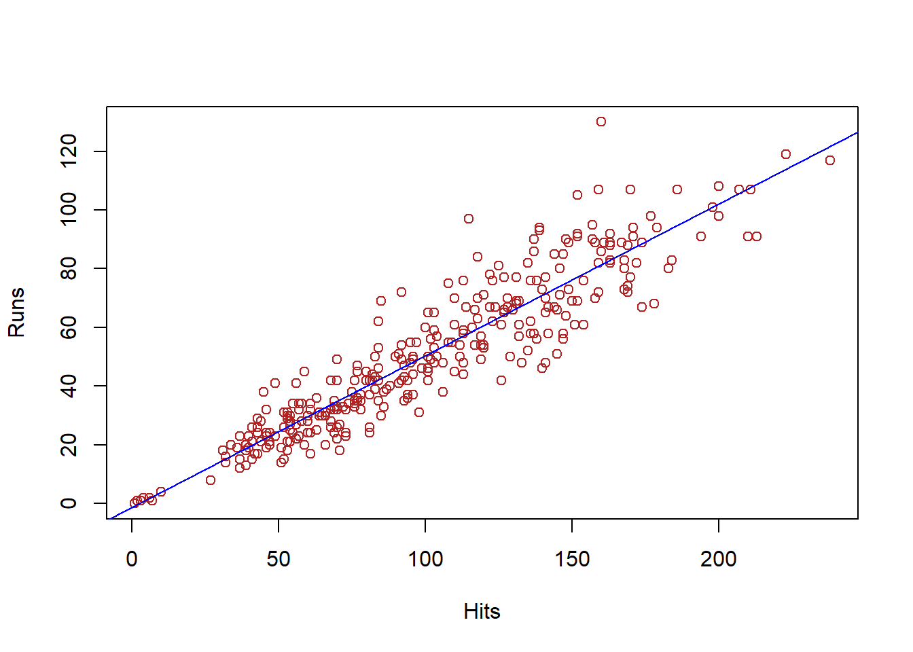

#install.packages("ISLR") # para descargar la librería de internet
library(ISLR) # para instalar la libbrería en R
Datos <- Wage # Creamos el marco de datos Datos con los datos de Wage
attach(Datos) # Para poder acceder directamente a sus variables4 Estadística descriptiva bivariante
4.1 Introducción
Cuando en un estudio estadístico no se observa una sola variable, sino dos variables medidas sobre los mismos individuos, entramos en el ámbito de la estadística descriptiva bivariante. El objetivo principal en este caso no es solo describir cada variable por separado, sino también analizar cómo se relacionan entre sí, es decir, estudiar si existe algún tipo de dependencia o asociación entre ambas. Por ejemplo, puede interesarnos analizar conjuntamente la edad y la estatura de un grupo de personas, o el tipo de estudios y la situación laboral de un conjunto de individuos.
Nota
Para los ejemplos que se van a presentar en este capítulo, utilizaremos el conjunto de datos Wage, incluido en el paquete ISLR de R, que contiene información salarial y demográfica de 3000 trabajadores y que ya se ha introducido en el capítulo de estadística descriptiva univariante.
El marco de datos creado contiene las siguientes variables:
- year: año de realización de la observación (cuantitativa discreta)
- age: edad en años (cuantitativa discreta)
- maritl: estado civil (cualitativa)
- race: raza (cualitativa)
- education: nivel educativo (cualitativa)
- region: región en la que reside (cualitativa)
- jobclass: tipo de trabajo, ya sea industrial o información (cualitativa)
- health: estado de salud (cualitativa)
- health_ins: disponibilidad de seguro sanitario (cualitativa)
- logwage: logaritmo del salario anual (cuantitativa continua)
- wage: salario anual (cuantitativa continua)
4.2 Tablas de frecuencias
Al igual que en el caso univariante, los datos observados suelen presentarse de forma desordenada y con posibles repeticiones, por lo que es necesario organizarlos para facilitar su interpretación. En estadística bivariante, esta organización se realiza mediante las llamadas tablas de contingencia o tablas de doble entrada, en las que se recogen simultáneamente las opciones de ambas variables y el número de individuos que presentan cada combinación posible de valores. A partir de estas tablas se pueden obtener distintos resúmenes de la información, como las frecuencias marginales, que describen cada variable por separado, y las frecuencias condicionadas, que permiten analizar el comportamiento de una variable cuando se fija un valor de la otra. Estas herramientas constituyen la base para el estudio descriptivo de dos variables y serán el punto de partida de este capítulo.
4.3 Tablas de contingencia o tablas de doble entrada
Al igual que en el caso univariante, se trata de resumir en una tabla el número de veces que aparece repetido cada uno de los posibles valores que toman las variables (las citadas clases). La diferencia fundamental es que ahora no se consideran valores individuales, sino pares de valores \((x,y)\), ya que se estudian simultáneamente las variables \(X\) e \(Y\) para cada individuo de la muestra.
El número de veces con que aparece cada par de valores se conoce de forma general como frecuencia absoluta conjunta de la clase \((X_i,Y_j)\).
Ejemplo
Considera el conjunto de datos Wage, incluido en el paquete ISLR de R, que contiene información salarial y demográfica de 3000 trabajadores. Vamos a obtener la tabla de contingencia de las variables year y race.
Solución:
Podemos obtener el número de trabajadores de cada raza en cada uno de los años estudiados que contiene nuestra variable. Para ello ejecutamos el comando table sobre ambas variables a la vez:
tablaContingencia <- table(year,race)
tablaContingencia race
year 1. White 2. Black 3. Asian 4. Other
2003 433 39 33 8
2004 410 42 30 3
2005 366 52 21 8
2006 328 45 17 2
2007 313 39 28 6
2008 320 36 26 6
2009 310 40 35 4La primera variable que incluyamos en el comando aparece representada en las filas, mientras que las clases de la segunda variable se muestran en las columnas de la tabla, siendo el orden de las variables indiferente desde el punto de vista estadístico.
También se puede construir una tabla de doble entrada de frecuencias relativas conjuntas (con los valores redondeados a cuatro decimales) tomando:
tablaContingenciaRel <- round(prop.table(tablaContingencia), 4)
tablaContingenciaRel race
year 1. White 2. Black 3. Asian 4. Other
2003 0.1443 0.0130 0.0110 0.0027
2004 0.1367 0.0140 0.0100 0.0010
2005 0.1220 0.0173 0.0070 0.0027
2006 0.1093 0.0150 0.0057 0.0007
2007 0.1043 0.0130 0.0093 0.0020
2008 0.1067 0.0120 0.0087 0.0020
2009 0.1033 0.0133 0.0117 0.0013Así, podemos decir que el 1’4% de los trabajadores corresponden al año 2004 y son de raza negra.
4.4 Frecuencias marginales
A partir de la tabla de frecuencias absolutas conjuntas se puede obtener la distribución de frecuencias de cada una de las variables por separado, lo que se conoce como distribución marginal. Las frecuencias marginales se corresponden con las frecuencias absolutas estudiadas en la lección anterior para cada variable considerada de forma individual.
Estas frecuencias se obtienen a partir de la tabla de doble entrada sumando las frecuencias absolutas conjuntas por filas o por columnas, según la variable de interés.
Ejemplo
Vamos a completar la tabla del ejemplo anterior añadiendo las distribuciones marginales:
addmargins(tablaContingencia) race
year 1. White 2. Black 3. Asian 4. Other Sum
2003 433 39 33 8 513
2004 410 42 30 3 485
2005 366 52 21 8 447
2006 328 45 17 2 392
2007 313 39 28 6 386
2008 320 36 26 6 388
2009 310 40 35 4 389
Sum 2480 293 190 37 3000En la tabla ampliada, las frecuencias marginales suelen incorporarse añadiendo una última fila y una última columna que en R aparecen etiquetadas como Sum, ya que recogen la suma de las frecuencias correspondientes de cada fila o columna. Por ejemplo, la suma de las frecuencias conjuntas correspondientes a la raza Black a lo largo de todos los años considerados da lugar a una frecuencia marginal de 293. Este valor coincide con la frecuencia absoluta obtenida en el análisis univariante y nos indica que en el estudio hay un total de 293 trabajadores de raza negra, con independencia del año al que pertenezcan.
De modo similar, podemos añadir las frecuencias relativas marginales a la tabla de frecuencias relativas conjuntas mediante:
addmargins(tablaContingenciaRel) race
year 1. White 2. Black 3. Asian 4. Other Sum
2003 0.1443 0.0130 0.0110 0.0027 0.1710
2004 0.1367 0.0140 0.0100 0.0010 0.1617
2005 0.1220 0.0173 0.0070 0.0027 0.1490
2006 0.1093 0.0150 0.0057 0.0007 0.1307
2007 0.1043 0.0130 0.0093 0.0020 0.1286
2008 0.1067 0.0120 0.0087 0.0020 0.1294
2009 0.1033 0.0133 0.0117 0.0013 0.1296
Sum 0.8266 0.0976 0.0634 0.0124 1.0000Esta tabla nos permite dar información como:
- En el estudio hay un 9’72% de trabajadores de raza negra, con independencia del año al que pertenezcan.
- Un 17’1% de los trabajadores del estudio son del año 2003, independientemente de su raza.
4.5 Frecuencias condicionadas
Una vez obtenidas las frecuencias conjuntas y marginales, es posible profundizar en el análisis de la relación entre las dos variables mediante las frecuencias condicionadas. Mientras que las frecuencias marginales describen el comportamiento de cada variable por separado, las frecuencias condicionadas permiten estudiar cómo se distribuye una variable cuando se fija un valor concreto de la otra.
En una tabla de doble entrada, las frecuencias condicionadas se obtienen tomando como referencia una fila o una columna de la tabla y comparando las frecuencias conjuntas con el total correspondiente. De este modo, se puede analizar, por ejemplo, cómo se distribuyen las razas de los trabajadores dentro de un año determinado, o bien cómo se reparten los años dentro de una raza concreta. Estas frecuencias resultan especialmente útiles para detectar posibles diferencias o asociaciones entre las variables estudiadas.
Para obtener las frecuencias relativas condicionadas, se comparan las frecuencias absolutas conjuntas con el total correspondiente a la clase por la que se condiciona. En la práctica, esto equivale a dividir cada frecuencia conjunta entre la frecuencia marginal de la fila o de la columna considerada.
Ejemplo
Queremos obtener información sobre la distribución de la raza de los trabajadores en un año concreto. En particular, nos interesa estudiar cómo se reparten las distintas razas entre los trabajadores correspondientes al año 2004. Esto supone analizar la distribución de la variable raza (\(X\)) condicionada a que la variable año (\(Y\)) toma el valor 2004.
Solución:
Para ello, consideramos únicamente los valores correspondientes a la fila 2004 (que es la segunda fila) de la tabla de doble entrada:
tabla2004 <- tablaContingencia["2004",]
tabla20041. White 2. Black 3. Asian 4. Other
410 42 30 3 Se pueden obtener las frecuencias condicionadas al año 2004 simplemente dividiendo las frecuencias de la tabla anterior entre 485, que es la frecuencia marginal del año 2004:
tabla2004 / sum(tabla2004) 1. White 2. Black 3. Asian 4. Other
0.845360825 0.086597938 0.061855670 0.006185567 Sin embargo, en R el cálculo de las frecuencias relativas condicionadas se realiza habitualmente mediante la función prop.table(). Si queremos obtener las frecuencias relativas condicionadas por filas, es decir, estudiar la distribución de la variable representada en las columnas fijando un valor de la variable representada en las filas, se utiliza la opción 1. Por el contrario, si queremos obtener las frecuencias relativas condicionadas por columnas, fijando un valor de la variable representada en las columnas y estudiando la distribución de la variable de las filas, se utiliza la opción 2.
En nuestro caso, al haber puesto la variable year por filas, hemos de condicionar por filas. Podemos, para ello, emplear la tabla anterior tabla2004, u obtener la tabla completa condicionada por filas e imprimir solo la fila correspondiente al año 2004, como en este caso:
tabla2004rel <- prop.table(tablaContingencia,1)
tabla2004rel["2004", ] 1. White 2. Black 3. Asian 4. Other
0.845360825 0.086597938 0.061855670 0.006185567 Así, obtenemos que un 8’6% de los trabajadores observados en el año 2004 eran de raza negra.
De manera análoga, podemos plantearnos el estudio inverso. En este caso, queremos analizar la distribución de los años correspondientes a los trabajadores de una raza determinada. Por ejemplo, si nos interesa estudiar cómo se reparten los años de observación entre los trabajadores de raza Black, debemos considerar la columna correspondiente a dicha raza en la tabla de doble entrada y calcular las frecuencias relativas respecto del total de esa columna:
tablaBlackrel <- prop.table(tablaContingencia,2)
tablaBlackrel[,"2. Black"] 2003 2004 2005 2006 2007 2008 2009
0.1331058 0.1433447 0.1774744 0.1535836 0.1331058 0.1228669 0.1365188 Observa, finalmente, que extraemos filas o columnas concretas utilizando la notación de corchetes. Sin embargo, para obtener una fila, se indica primero el nombre de la fila y se dejan todas las columnas sin especificar, mientras que para obtener una columna, se dejan sin especificar las filas y se indica el nombre de la columna.
4.6 Tablas de doble entrada con variables continuas
Todas las tablas anteriores se han construido con una variable cualitativa y otra variable cuantitativa discreta que toma pocos (7) valores. En el caso de variables continuas o discretas que toman muchos valores, también se pueden obtener tablas de doble entrada. Para ello, lo más adecuado es construir intervalos de agrupación para cada variable continua y anotar, para cada pareja de intervalos, cuántos datos caen dentro.
Ejemplo
Para el mismo conjunto de datos Wage, vamos a obtener las tablas de frecuencias absolutas y relativas de las variables age y race.
Solución:
Para ello, nos basamos en las funciones vistas en estadística descriptiva univariante, y consideramos el número de intervalos dados por la regla de Sturges para la variable age. consideramos únicamente los valores correspondientes a la fila 2004 (que es la segunda fila) de la tabla de doble entrada:
tablaContingenciaContinua <- table(cut(age,breaks = nclass.Sturges(age),include.lowest = TRUE), race)
addmargins(tablaContingenciaContinua) race
1. White 2. Black 3. Asian 4. Other Sum
[17.9,22.8] 79 15 3 1 98
(22.8,27.5] 194 23 9 7 233
(27.5,32.3] 260 27 36 9 332
(32.3,37.1] 317 34 29 1 381
(37.1,41.8] 312 34 26 5 377
(41.8,46.6] 389 38 23 4 454
(46.6,51.4] 380 43 22 6 451
(51.4,56.2] 275 29 20 2 326
(56.2,60.9] 139 20 15 1 175
(60.9,65.7] 94 12 2 1 109
(65.7,70.5] 21 10 4 0 35
(70.5,75.2] 13 8 0 0 21
(75.2,80.1] 7 0 1 0 8
Sum 2480 293 190 37 3000tablaContingenciaContinuaRel <- round(prop.table(tablaContingenciaContinua), 4)
tablaContingenciaContinuaRel race
1. White 2. Black 3. Asian 4. Other
[17.9,22.8] 0.0263 0.0050 0.0010 0.0003
(22.8,27.5] 0.0647 0.0077 0.0030 0.0023
(27.5,32.3] 0.0867 0.0090 0.0120 0.0030
(32.3,37.1] 0.1057 0.0113 0.0097 0.0003
(37.1,41.8] 0.1040 0.0113 0.0087 0.0017
(41.8,46.6] 0.1297 0.0127 0.0077 0.0013
(46.6,51.4] 0.1267 0.0143 0.0073 0.0020
(51.4,56.2] 0.0917 0.0097 0.0067 0.0007
(56.2,60.9] 0.0463 0.0067 0.0050 0.0003
(60.9,65.7] 0.0313 0.0040 0.0007 0.0003
(65.7,70.5] 0.0070 0.0033 0.0013 0.0000
(70.5,75.2] 0.0043 0.0027 0.0000 0.0000
(75.2,80.1] 0.0023 0.0000 0.0003 0.0000round(prop.table(tablaContingenciaContinua, 1), 4) # Condicionada por filas race
1. White 2. Black 3. Asian 4. Other
[17.9,22.8] 0.8061 0.1531 0.0306 0.0102
(22.8,27.5] 0.8326 0.0987 0.0386 0.0300
(27.5,32.3] 0.7831 0.0813 0.1084 0.0271
(32.3,37.1] 0.8320 0.0892 0.0761 0.0026
(37.1,41.8] 0.8276 0.0902 0.0690 0.0133
(41.8,46.6] 0.8568 0.0837 0.0507 0.0088
(46.6,51.4] 0.8426 0.0953 0.0488 0.0133
(51.4,56.2] 0.8436 0.0890 0.0613 0.0061
(56.2,60.9] 0.7943 0.1143 0.0857 0.0057
(60.9,65.7] 0.8624 0.1101 0.0183 0.0092
(65.7,70.5] 0.6000 0.2857 0.1143 0.0000
(70.5,75.2] 0.6190 0.3810 0.0000 0.0000
(75.2,80.1] 0.8750 0.0000 0.1250 0.0000round(prop.table(tablaContingenciaContinua, 2), 4) # Condicionada por columnas race
1. White 2. Black 3. Asian 4. Other
[17.9,22.8] 0.0319 0.0512 0.0158 0.0270
(22.8,27.5] 0.0782 0.0785 0.0474 0.1892
(27.5,32.3] 0.1048 0.0922 0.1895 0.2432
(32.3,37.1] 0.1278 0.1160 0.1526 0.0270
(37.1,41.8] 0.1258 0.1160 0.1368 0.1351
(41.8,46.6] 0.1569 0.1297 0.1211 0.1081
(46.6,51.4] 0.1532 0.1468 0.1158 0.1622
(51.4,56.2] 0.1109 0.0990 0.1053 0.0541
(56.2,60.9] 0.0560 0.0683 0.0789 0.0270
(60.9,65.7] 0.0379 0.0410 0.0105 0.0270
(65.7,70.5] 0.0085 0.0341 0.0211 0.0000
(70.5,75.2] 0.0052 0.0273 0.0000 0.0000
(75.2,80.1] 0.0028 0.0000 0.0053 0.00004.7 Relaciones entre variables nominales
Cuando estudiamos la relación existente entre dos variables nominales, el análisis se centra en detectar si son independientes o se puede detectar alguna relación entre ellas. Que dos variables sean independientes significa que la distribución de una de ellas no varía cuando se condiciona por cualquier valor de la otra. En términos de frecuencias relativas, supone que, las frecuencias relativas de las distribuciones condicionadas de una de las variables al condicionar por los distintos valores de la otra coinciden entre sí y, a su vez, coinciden con la frecuencia relativa de la distribución marginal.
4.7.1 Coeficiente de contingencia
Consideremos una tabla de doble entrada representado la distribución conjunta de la variable bidimensional \((X,Y)\). Si estas variables fuesen independientes, entonces, para cada \(j=1,\dots,h\), la distribución marginal de \(X\) debería de coincidir con la distribución de \(X\) condicionado por \(Y=Y_j\), lo que significaría que para cada valor \(X_i\) la frecuencia relativa de dicho valor debería ser la misma en ambas distribuciones. Por tanto, si las variables fuesen independientes, se esperaría que la frecuencia absoluta conjunta la clase \((X_i,Y_j)\) verificase que:
\[ \frac{n_{i*}}{n}=\frac{n_{ij}}{n_{*j}}, \quad \forall i=1,\dots,k \text{ } j=1,\dots,h \]
El coeficiente de contingencia de Pearson es una medida de asociación basada en la discrepancia entre las frecuencias absolutas observadas y las frecuencias absolutas esperadas. Se define la frecuencia absoluta esperada de la clase \((X_i,Y_j)\) como: \[ e_{ij}=\frac{n_{i*}n_{*j}}{n} \]
El coeficiente de contingencia, \(C\), se define como: \[ C=\sqrt{\frac{\chi^2}{\chi^2+n}}, \] donde \(\chi^2=\sum_{i=1}^k \sum_{j=1}^h \frac{(n_{ij}-e_{ij})^2}{e_{ij}}\).
Propiedades:
\(0\leq C <1\)
El valor máximo que puede tomar \(C\) viene dado por: \[C_{max}=\sqrt{\frac{k-1}{k}}, \] donde \(k\) es el mínimo entre el número de filas y el número de columnas de la tabla.
Cuanto \(C\) más se acerque a 0 más evidencia habrá acerca de la independencia de ambas variables. Cuanto más se acerque a su valor máximo, mayor grado de asociación existirá entre las variables.
Ejemplo
Retomamos el ejemplo inicial del conjunto de datos Wage, en el que se obtuvo la tabla de contingencia de las variables nominales year y race. La siguiente tabla proporcional la distribución condicionada de la variable raza por cada uno de los años.
prop.table(tablaContingencia,1) race
year 1. White 2. Black 3. Asian 4. Other
2003 0.844054581 0.076023392 0.064327485 0.015594542
2004 0.845360825 0.086597938 0.061855670 0.006185567
2005 0.818791946 0.116331096 0.046979866 0.017897092
2006 0.836734694 0.114795918 0.043367347 0.005102041
2007 0.810880829 0.101036269 0.072538860 0.015544041
2008 0.824742268 0.092783505 0.067010309 0.015463918
2009 0.796915167 0.102827763 0.089974293 0.010282776A simple vista se aprecia en la tabla que las proporciones en las razas no cambian año a año, lo que parece indicar que las variables año y raza son independientes.
Calculemos a continuación el coeficiente de contingencia. En los paquetes base de no hay una orden que calcule directamente el coeficiente de contingencia, pero si el coeficiente \(\chi^2\)
chisq.test(year, race)
Pearson's Chi-squared test
data: year and race
X-squared = 21.91, df = 18, p-value = 0.236Utilizando que \(\chi^2=21.91\) y que \(n=3000\), se obtiene que el valor de \(C\) es:
sqrt(21.91/(21.91+3000))[1] 0.08514917El valor de \(C=0.0851\) viene a confirmar lo que ya se adivinaba en la tabla de frecuencias condicionadas; hay un grado de independencia alto entre las variables. En el contexto del conjunto de datos, esto vendría a significar que el porcentaje de trabajadores de una determinada raza contratado en la empresa no depende del año de estudio.
4.8 Relación entre variables ordinales
Se considera una población sobre la que se han medido dos características de tipo ordinal. Interesa saber si estas variables están relacionadas de forma directa (si se ordenan los individuos según una característica, el orden es similar a si se ordenan según la otra), de forma inversa (si se ordenan los individuos según una característica, el orden es el contrario a si se ordenan según la otra) o no existe relación entre ellas (los órdenes de los individuos en ambas variables no guardan ningún tipo de relación).
4.8.1 Coeficiente de correlación de Spearman
Se consideran \(X\) e \(Y\) dos variables de tipo ordinal que han sido observadas sobre una población de tamaño \(n\). Para cada individuo de la población se anota su posición respecto de ambas características. En caso de empate entre varios individuos en una característica a todos ellos se les asigna la misma posición promedio (es decir, si dos individuos están empatados respecto de una característica en las posiciones 3 y 4, a ambos se les asigna el valor 3.5). De este modo, se tienen dos conjuntos \(r(X)\) y \(r(Y)\) que indican la posición que ocupa cada individuo al ordenar los valores observados de \(X\) e \(Y\).
El coeficiente de correlación de Spearman viene dado por: \[r_s=\frac{S_{r(X)r(Y)}} {S_{r(X)}S_{r(Y)}}\] donde \(S_{r(X)r(Y)}\) es la covarianza de los vectores \(r(X)\) y \(r(Y)\) cuya definición se verá en la siguiente sección (véase Ecuación 4.1).
Propiedades:
\(-1 \leq r_s \leq 1\)
Cuanto más se aproxime \(r_s\) a 1 mayor relación directa existe entre las variables y cuanto más se aproxima a -1 mayor relación inversa habrá entre ellas. Conforme se aproxime a 0 indica que las variables no muestran ningún tipo de relación (independencia)
Si no hay empates entre los individuos en ninguna de las dos características, el coeficiente de Spearman se puede calcular como:
\[ r_s=1-\frac{6 \sum_{i=1}^n d_i^2}{n(n^2-1)} \] donde, para cada \(i=1,\dots,n\) \(d_i=r_i(X)-r_i(Y)\) es la diferencia entre la posición que ocupa el individuo \(i\) respecto a \(X\) menos la que ocupa respecto a \(Y\). En caso de que el número de empates sea reducido, la empresión anterior sigue siendo una buena aproximación al verdadero valor del coeficiente de correlación de Spearman.
Ejemplo
Utilizando de nuevo el conjunto de datos Wage vamos a estudiar la relación entre las variables
- age: edad en años (cuantitativa)
- wage: salario anual (cuantitativa)
Como ambas variables son cuantitativas, se puede obtener el coeficiente de correlación de Spearman directamente mediante el comando
cor(age,wage, method="spearman")[1] 0.2298977En este caso, el valor del coeficiente de Spearman indica que no hay una relación clara entre la edad y el sueldo de los trabajadores.
Si queremos estudiar ahora la relación entre las variables
- education: nivel educativo (cualitativa ordinal)
- wage: salario anual (cuantitativa)
no se puede aplicar el método anterior porque el comando solo admite variables numéricas. Para poder proceder, vamos a utilizar el comando que me proporciona la posición de cada individuo respecto de un conjunto de datos (resolviendo los empates asignando la posición promedio).
De este modo, se puede calcular el coeficiente de Spearman de nuevo mediante el comando
cor(rank(education),rank(wage))[1] 0.5031817o bien utilizando directamente su definición formal:
cov(rank(education),rank(wage))/(sd(rank(education))*sd(rank(wage)))[1] 0.5031817En este caso. el valor del coeficiente de Spearman revela una relación de intensidad media y de tipo directo entre el nivel educativo y el sueldo de los trabajadores. Que sea de tipo directo indica que conforme los trabajadores tienen más nivel educativo, su sueldo es superior.
4.9 Relación entre variables cuantitativas
Consideremos dos variables cuantitativas \(X\) e \(Y\). En este análisis no sólo vamos a ser capaces de detectar si las variables presentan o no relación, y si ésta, en caso de existir, es de tipo directo o inverso, sino que además podremos detectar si se ajusta a alguna relación de tipo funcional.
Consideraremos que los datos, en lugar de estar presentados en una tabla de doble entrada, los tenemos tabulados en dos columnas. Sean \(\{(x_i,y_i)\}_{i=1}^{n}\) los pares de datos observados en cada individuo de la población.
4.9.1 Diagrama de dispersión
El diagrama de dispersión (o nube de puntos) consiste en representar los datos anteriores en un sistema de ejes coordenados, de modo que si en el eje horizontal representamos los valores de la variable \(X\) y en el eje vertical los valores de la variable \(Y\), entonces el par \((x_i,y_i)\) se corresponde con el punto de plano con coordenadas \((x_i,y_i)\).
Echando un primer vistazo al diagrama de dispersión podemos observar que:
- Si la nube de puntos tiene forma creciente, significa que a valores altos (bajos) de \(X\) le corresponden valores altos (bajos) de \(Y\). Se dice que \(X\) e \(Y\) mantienen una relación directa, lo que significa que cuando una de ellas aumenta la otra también lo hace.

- Si la nube de puntos tiene forma decreciente, significa que a valores altos (bajos) de \(X\) le corresponden valores bajos (altos) de \(Y\). Se dice que \(X\) e \(Y\) mantienen una relación inversa, lo que significa que cuando una de ellas aumenta, la otra disminuye.

- Si la nube de puntos no muestra una relación sistemática, significa que no hay relación entre las variables.

Ejemplo
El conjunto de datos Hitter, incluido en el paquete ISLR de R contiene observaciones sobre 20 variables medidas en 322 partidos de la MLB (Major League Baseball) disputados en el año 1986. En concreto, nos centramos en las variables:
- hits: número de hits1 en el partido (cuantitativa discreta)
- runs: número de carreras en el partido (cuantitativa discreta)
A continuación se muestra el diagrama de dispersión de estos datos
Datos2 <- Hitters
attach(Datos2)
plot(Hits,Runs)
El diagrama anterior parece indicar que existe una relación lineal directa entre ambas variables.
4.9.2 Coeficiente de correlación lineal de Pearson
Dado un conjunto de datos \(\{(x_i,y_i)\}_{i=1}^{n}\) que proviene de la observación de una variable bidimensional \((X,Y)\) sobre una población de tamaño \(n\), se define la covarianza entre \(X\) e \(Y\) como \[ S_{XY}=\frac{\sum_{i=1}^{n} (x_i-\overline{x})(y_i-\overline{y})}{n}=\frac{\sum_{i=1}^{n} x_i y_i}{n} - \overline{x} \overline{y} \tag{4.1}\] y se define el coeficiente de correlación lineal de Pearson como: \[ R_{XY}=\frac{S_{XY}}{S_X S_Y} \]
Propiedades:
- \(-1 \leq R_{XY} \leq 1\)
Conforme \(R_{XY}\) se acerca a 1, aumenta el grado de dependencia lineal directa entre \(X\) e \(Y\). Si \(R_{XY}=1\), entonces existe una dependencia lineal directa exacta entre ambas variables, de modo que los puntos del diagrama de dispersión se disponen sobre una linea recta de pendiente positiva.
Conforme \(R_{XY}\) se acerca a -1, aumenta el grado de dependencia lineal inversa entre \(X\) e \(Y\). Si \(R_{XY}=-1\), entonces existe una dependencia lineal inversa exacta entre ambas variables, de modo que los puntos del diagrama de dispersión se disponen sobre una linea recta de pendiente negativa.
Que \(R_{XY}\) se aproxime a 0 indica que no existe dependencia lineal entre ambas variables. Esto no significa que no pueda existir otro tipo de relación funcional entre las mismas.
\(R_{XY}\) carece de unidad y tiene el mismo signo que la covarianza
No es posible establecer valores frontera generales para poder concluir si la asociación lineal es alta o no según la relación del valor de \(R_{XY}\) con estos valores. El coeficiente de correlación debe valorarse comparándolo entre los existentes en otras poblaciones o con los que usualmente suelen encontrarse en el tipo de estudio específico del que se trate.
Ejemplo (cont.)
En el gráfico de dispersión se observaba una relación lineal directa entre las variables Hitsy Runs. A continuación, vamos a calcular el coeficiente de regresión lineal para confirmar este hecho.
El valor del coeficiente de correlación se puede obtener directamete mediante el comando :
cor(Hits,Runs)[1] 0.9221872o aplicando la fórmula del coeficiente
cov(Hits,Runs)/(sd(Hits)*sd(Runs))[1] 0.9221872El valor del coeficiente de correlación viene a confirmar que existe una relación lineal intensa de tipo directo entre las variables Hitsy Runs.
4.9.3 Recta de regresión
Supongamos que se conoce que entre dos variables \(X\) e \(Y\) existe una grado de asociación lineal alto. Si a partir de la información disponible fuésemos capaces de obtener una recta que explicase la relación entre los datos, podríamos utilizarla para estimar los valores de una variable a partir de un valor conocido de la otra. Llamamos recta de regresión de \(Y\) sobre \(X\) aquella que permite predecir valores de la variable \(Y\) a partir de los valores de \(X\).
Consideremos un conjunto de pares de datos \(\{x_i,y_i\}_{i=1}^{n}\) entre los que existe un grado de asociación lineal alto. Buscamos una recta de la forma \(Y=aX+b\) que ajuste la relación lineal existente.
Si los puntos del diagrama de dispersión se dispusiesen exactamente sobre una recta, ésta sería la recta de regresión.
En caso contrario, la determinación de los parámetros \(a\) y \(b\) se hace utilizando el método de los mínimos cuadrados que consiste en obtener minimizar el error existente entre el datos observado \(y_i\) y el que se pronosticaría, \(\widetilde{y_i}=ax_i+b\), utilizando la recta de regresión. En concreto, se toman \(a\) y \(b\) de modo que la expresión \[ \frac{\sum_{i=1}^{n} (y_i-\widetilde{y_i})^2}{n}=\frac{\sum_{i=1}^{n} \left(y_i-(ax_i+b_i)\right)^2}{n} \] sea mínima. Se demuestra que los valores de \(a\) y \(b\) vienen dados por: \[a=\frac{S_{XY}}{S_X^2} \qquad b=\overline{y}-a\overline{x}.\]
Ejemplo (cont.)
Hemos visto que existe una relación lineal de tipo directo entre las variables Hitsy Runs. A continuación, vamos a obtener la recta que mejor ajusta esa relación. Esa recta nos servirá para predecir el valor de una variable a partir de una valor dado de la otra. Para ello, obtendremos la recta de regresión de la cantidad carreras sobre la cantidad de hits.
La expresión de la recta de regresión buscada se puede obtener mediante la orden `lm``
lm(Runs ~ Hits)
Call:
lm(formula = Runs ~ Hits)
Coefficients:
(Intercept) Hits
-1.2807 0.5166 que nos indica que la recta de regresión es \[\text{Runs}=0.5166\times \text{Hits}-1.2807 \] También se podría haber obtenido la recta calculando cada uno de sus coeficientes. El valor \(a\) de la pendiente es:
a<-cov(Hits,Runs)/var(Hits)
a[1] 0.5166122El valor \(b\) de la ordenada es:
b <- mean(Runs)-a*mean(Hits)
b[1] -1.280732Por último, se puede añadir la recta de regresión al diagrama de dispersión
plot(Hits,Runs, col="firebrick")
abline(lm(Runs ~ Hits), col="blue")
Un hit se produce cuando el bateador golpea la bola enviándola al territorio válido del otro equipo y consigue alcanzar la primera base.↩︎